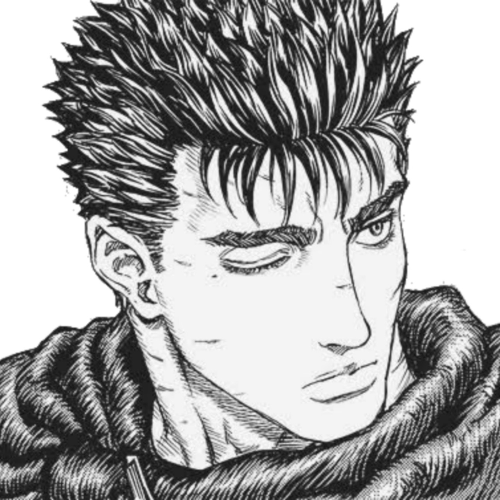
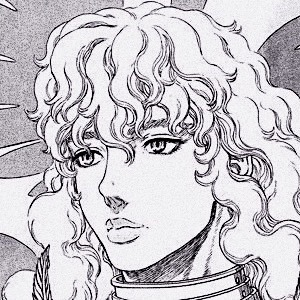

"Se você busca muito alguma coisa, é certo que deixará outras no meio do caminho. Só me sinto vivo quando estou usando a minha espada. Humanos são fracos e morrem facilmente. Mas não importa o quão fracos somos, não importa o quanto somos torturados, não importa quanta dor sentimos, nós ainda queremos viver."
- Guts

"Todos se deixam levar pela correnteza daquilo chamado destino ou coisa parecida, para no final desaparecerem do mundo, desperdiçando suas vidas, sem ao menos descobrirem o significado de suas existências."
- Griffith
 "Naquele dia, eu finalmente percebi. Eu não conseguia desviar meus olhos, não de Griffith, que havia perdido pela primeira vez e estava de joelhos; mas sim das costas do Guts, que se afastava sem sequer olhar para trás."
- Casca
"Naquele dia, eu finalmente percebi. Eu não conseguia desviar meus olhos, não de Griffith, que havia perdido pela primeira vez e estava de joelhos; mas sim das costas do Guts, que se afastava sem sequer olhar para trás."
- Casca